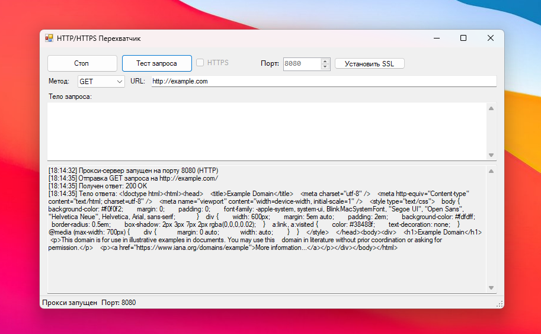
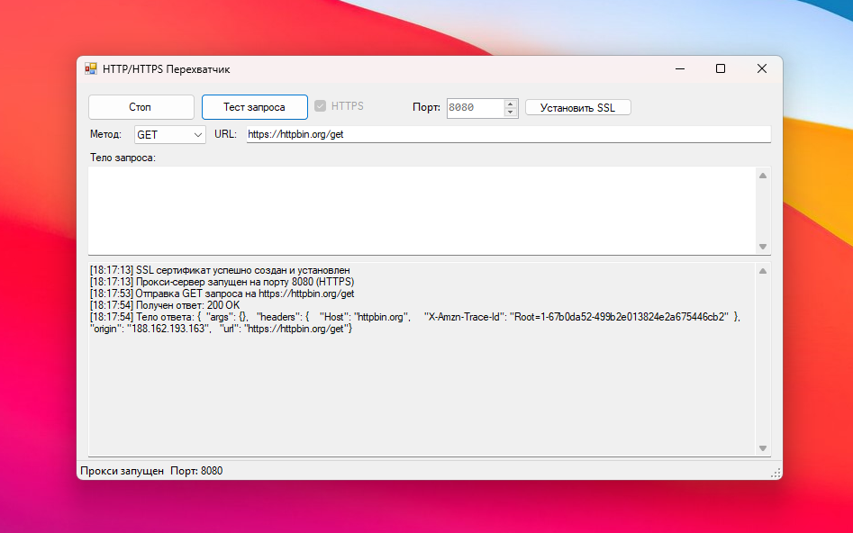

Powerful HTTP Testing Made Simple
Monitor and test HTTP/HTTPS requests with an elegantly designed interface

Powerful Features
Everything you need for HTTP/HTTPS testing
SSL Support
Seamless HTTPS interception with automatic SSL certificate generation
Real-time Monitoring
Monitor HTTP traffic with detailed request and response logging
Request Testing
Test endpoints with support for GET, POST, PUT, and DELETE methods
Custom Configuration
Flexible port configuration and proxy settings
See It in Action
Simple, intuitive interface for all your HTTP testing needs
Main Interface
Clean, intuitive design for efficient testing

HTTPS Interception
Secure traffic monitoring made simple
Ready to Start?
Download HTTP Interceptor and start testing in seconds
HTTP Interceptor
Version 1.0.0- HTTP/HTTPS Support
- Real-time Monitoring
- SSL Certificate Generation
- Custom Port Configuration
Download for Windows
0.4 MB
Requires Windows 10+ and .NET Framework 4.7.2
Quick Start
- Download and Install - Get the latest version
- Configure Port - Default: 8080
- SSL Setup - Click "Install SSL" for HTTPS support
- Start Proxy - Click "Start" to begin monitoring
- Test Requests - Use the built-in request tester